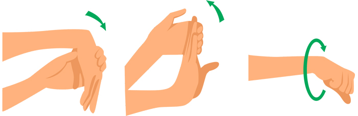

Alongamentos para mãos e pulsos: Uma nova roupagem para velhos conhecidos!

1. Mão para baixo, punho alongado
Objetivo: Alongar os músculos flexores do punho e antebraço.
- Estique o braço à sua frente, como se fosse cumprimentar alguém.
- Vire a palma da mão para baixo, como se estivesse segurando um livro.
- Com a outra mão, puxe os dedos para baixo, gentilmente, até sentir um leve alongamento no punho.
- Mantenha essa posição por 5 segundos e depois relaxe.
- Repita o movimento 10 vezes com a mesma mão.
- Troque de mão e repita o processo do outro lado.
Dica: Imagine que você está puxando os dedos para o chão, como se quisesse tocar o chão com a palma da mão.
2. Mão para cima, alongando tudo!
Objetivo: Alongar os músculos extensores do punho e antebraço, além dos dedos.
- Mantenha o braço esticado à sua frente, como no exercício anterior.
- Desta vez, vire a palma da mão para cima, como se estivesse exibindo uma joia.
- Com a outra mão, puxe os dedos para cima, alongando os punhos e os dedos.
- Sinta o alongamento e mantenha a posição por 5 segundos.
- Repita o movimento 10 vezes com a mesma mão.
- Troque de mão e repita o processo do outro lado.
Dica: Imagine que você está puxando os dedos para o céu, como se quisesse alcançar as estrelas.
3. Dedinhos em movimento, punhos girando!
Objetivo: Alongar os músculos do punho e melhorar a flexibilidade dos dedos.
- Feche os dedos em forma de punho, como se estivesse segurando uma bola.
- Faça movimentos circulares lentos com os punhos, em ambas as direções.
- Imagine que você está desenhando círculos no ar com seus punhos.
- Repita 10 vezes para cada lado.
- Relaxe as mãos e os dedos.
Dica: Faça os movimentos com suavidade e controle, sem forçar demais os punhos.
Dicas extras:
- Respire fundo durante os alongamentos, para maior relaxamento.
- Se sentir dor, pare o exercício e consulte um profissional de saúde.
- Faça os alongamentos algumas vezes ao dia, especialmente se você digita muito ou realiza atividades repetitivas com as mãos.
- Combine esses alongamentos com outros exercícios para as mãos e pulsos, como flexões e abduções dos dedos.
- Consulte um fisioterapeuta para obter uma orientação individualizada e personalizada.
Conclusão:
Alongar as mãos e pulsos regularmente é um hábito simples e eficaz que pode trazer muitos benefícios para sua saúde e bem-estar. Incorpore esses exercícios em sua rotina diária e sinta a diferença!